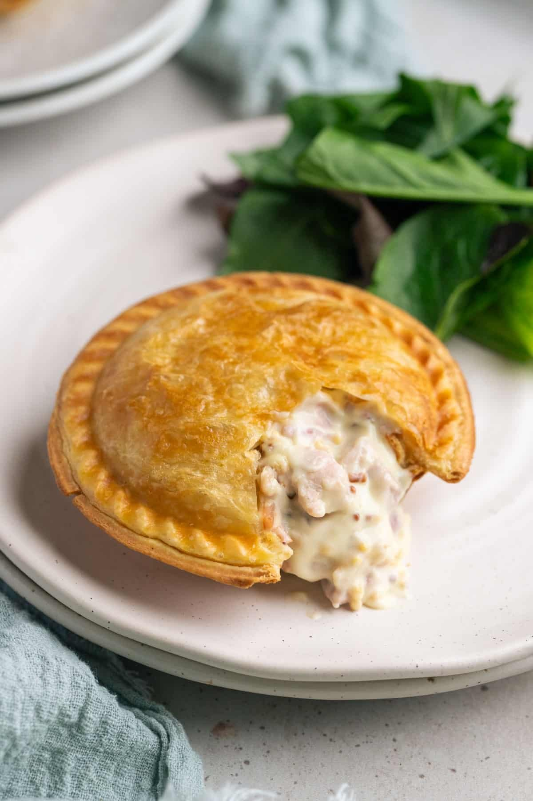

Chicken pie

- Heat 1 tbsp vegetable oil in a large flameproof casserole or deep frying pan over a high heat. Once hot, brown half the
chicken pieces on both sides, season and transfer to a plate or bowl. Repeat with the remaining chicken pieces.
-
Reduce the heat to medium and heat the remaining oil in the pan. Fry the onions, celery and carrots for 8-10 mins,
stirring occasionally and scraping any browned bits from the base, until all the veg has softened. Tip into the bowl
with the chicken and return the pan to a medium heat.
-
Melt the butter in the pan and stir in the flour to make a paste. Cook for a couple of minutes, stirring until the paste
turns golden. Add a splash of the milk, then whisk to combine. Continue slowly adding the milk, whisking continuously
until you have a smooth, creamy sauce.
Home